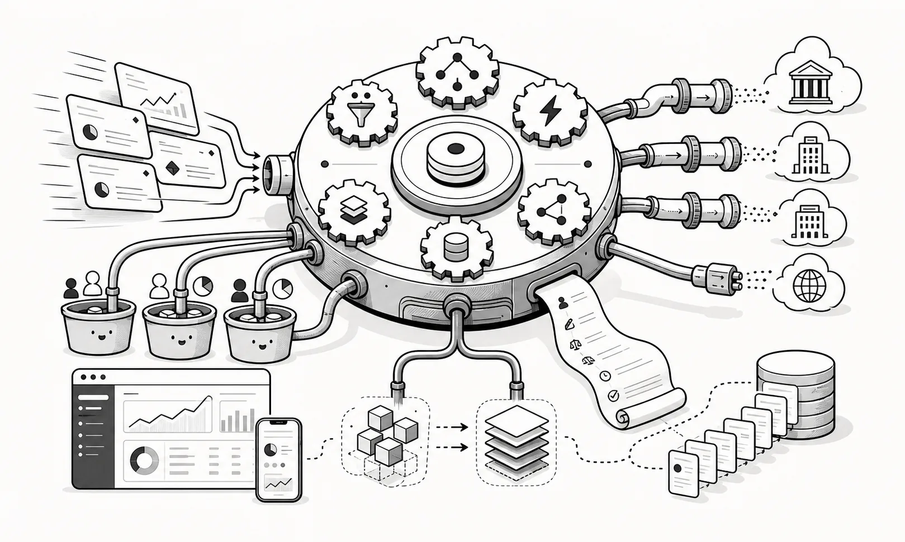

HEDGD Limited
A financial technology company building multi-asset trading workflow, notification and knowledge-sharing products.
The bet
HEDGD started in 2016 with a fairly simple idea: smaller hedge funds should be able to get a serious, self-starting SaaS Order Management System without needing the technology team usually required to host and maintain one. I'd worked with vendor-supplied OMS platforms run inside firms and thought the service model could be different. An OMS generally isn't where a hedge fund creates its competitive advantage.
More firms using the same platform could also mean stronger features, controls and operational maturity than each small fund could build alone. HEDGD focused on SaaS products for multi-asset order management, trading workflow, notifications and internal knowledge sharing. It targeted the operational friction around trading instructions, execution workflow, notification overload and team communication in investment-management environments.
What we built
A multi-asset order management system with allocation, charge and FIX engines, plus Order Chat, FinTiq and MicroReports for order workflow, channel-based notifications and concise internal publishing.
My role
I co-founded the company and led product and technology direction from London, shaping the platform, workflow design and delivery approach.
What was difficult
We won a few customers, but the sales cycle was slow. Not every fund was looking for a new OMS at the same time, and some smaller funds worked without a dedicated one. One of the strongest pieces of feedback was that we'd designed HEDGD to work properly on mobile, which was still unusual for institutional trading software.
We didn't fundamentally pivot away from the original idea. The larger problem was scope. An OMS touches so much of the trading workflow that building a credible one with a team of three was an enormous undertaking.
What happened
HEDGD operated from 2016 to 2023 as a specialist financial technology company focused on trading workflow and order management software. It came to a natural conclusion when both of us reached a point where the effort needed to keep pushing it forward was hard to justify against the reward.
Building the product was only part of it. In institutional financial software, becoming known, trusted and established can take much longer. We experienced what it takes to try to build a company from the ground up.

Delivery detail
Products were delivered through Azure-hosted web applications and supporting backend services using C#, ASP.NET Core, Razor Pages, Vue, SQL, SignalR, storage, service bus patterns and native iOS capability where needed.
Connections
The related build records cover parts of the product family in more detail:
Looking back
What I'm most proud of is that we had the courage to try. We had a go. We built the product. We won customers. We tried.
My co-founder remains one of the best people I've worked with. We still occasionally talk about whether the outcome might have been different if we'd continued. I don't know.
I'd spent much of the previous eight years in management. HEDGD put me back close to the software, writing code and creating things directly. It reminded me that's where my heart lies.